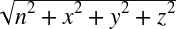

Chapter 11. Rotation in 3D Rigid-Body Simulators
A fundamental difference between particles and rigid bodies is that we cannot ignore rotation of rigid bodies. This applies to both 2D and 3D rigid bodies. In two dimensions, it’s quite easy to express the orientation of a rigid body; you need only a single scalar to represent the body’s rotation about a single axis. In three dimensions, however, there are three primary coordinate axes about each of which a rigid body may rotate. Moreover, a rigid body in three dimensions may rotate about any arbitrary axis, not necessarily one of the coordinate axes.
In two dimensions, we say that a rigid body has only one rotational degree of freedom, whereas in three dimensions we say that a rigid body has three rotational degrees of freedom. This may lead you to infer that in three dimensions, you must have three scalar quantities to represent a body’s rotation. Indeed, this is a minimum requirement, and you’re probably already familiar with a set of angles that represent the orientation of a rigid body in 3D—namely, the three Euler angles (roll, pitch, and yaw) that we’ll talk about in Chapter 15.
These three angles—roll, pitch, and yaw—are very intuitive and easy for us to visualize. For example, in an airplane the nose pitches up or down, the plane rolls (or banks) left or right, and the yaw (or heading) changes to the left or right. Unfortunately, there’s a problem with using these three Euler angles in rigid-body simulations. The problem is a numerical one that occurs when the pitch angle reaches plus or minus 90 degrees (π/2). When this happens, roll and yaw become ambiguous. Worse yet, the angular equations of motion written in terms of Euler angles contain terms involving the cosine of the pitch angle in the denominator, which means that when the pitch angle is plus or minus 90 degrees the equations become singular (i.e., there’s division by 0). If this happens in your simulation, the results would be unpredictable to say the least. Given this problem with Euler angles, you must use some other means of keeping track of orientation in your simulation. We’ll discuss two such means in this chapter—specifically, rotation matrices and quaternions.
Virtually every computer graphics book that we’ve read contains a chapter or section on using rotation matrices. Far fewer discuss quaternions, but if you’re familiar with quaternions, it’s probably in the same context as rotation matrices—that is, how they are used to rotate 3D points, objects, scenes, and points of view. In a simulation, however, you need to get a little more out of rotation matrices or quaternions and will use them in a different context than what you might be accustomed to. Specifically, you need to keep track of a body’s orientation in space and, moreover, the change in orientation over time. So it’s in this light that we’ll discuss rotation matrices and quaternions. We’ll try to be as concise as possible so as not to cloud the water with the proofs and derivations that you can find in the texts referred to in the Bibliography.
Rotation Matrices
A rotation matrix is a 3×3 matrix that, when multiplied with a point or vector, results in the rotation of that point about some axis, yielding a new set of coordinates. You can rotate points about axes in one coordinate system or you can use rotation matrices to convert points from one coordinate system to another, where one is rotated relative to the other.
Rotating a vector by a rotation matrix is typically written as follows: if v is a vector, and R is a rotation matrix, then v’ is v rotated by R according to the formula:
| v’ = R v |
You can combine multiple rotation matrices reflecting multiple sequential rotations into a single rotation matrix using usual matrix multiplication. If the rotation matrices are expressed in terms of fixed, global coordinates, then they are combined as follows:
| Rc = R1 R2 |
Here Rc is the combined rotation matrix reflecting a rotation first by R1 and then by R2. If the rotation matrices are expressed in terms of rotating, body-fixed coordinates, then they are combined in the reverse order as follows:
| Rc = R2 R1 |
We won’t go into the proof of this relation, but the reason it’s different depending on how you’ve defined your rotation matrices is that rotation matrices defined in fixed coordinates are unaffected by the rotation itself since the coordinate axes stay fixed. On the other hand, if the rotation matrices are defined relative to a coordinate system that is rotating due to sequential application of rotation matrices, then all rotation matrices after the first will be affected since they were first defined relative to the original state of the coordinate system—that is, before the first rotation matrix was applied. This means that the subsequent rotation matrices must be corrected to reflect the new system as affected by the previous rotation before they can be correctly applied. In other words, you have to rotate R2 by R1 to get a new R2 before applying it. All this happens to work out in such a way that you reverse the order of multiplication of rotation matrices when they are defined in a rotating coordinate system.
Figure 11-1 shows a right-handed coordinate system that illustrates the directions of positive rotation about each coordinate axis.
Let’s consider rotation around the z-axis where the point shown in Figure 11-2 is rotated through an angle θ.
The coordinates of the point before the rotation are (x,y,z) and after the rotation the coordinates are (xr, yr, zr). The rotated coordinates are related to the original coordinates and the rotation angle by the following:
| xr = x cos θ − y sin θ |
| yr = x sin θ + y cos θ |
| zr = z |
Notice that since the point is rotating about the z-axis, its z coordinate remains unchanged. To write this in the vector-matrix notation, v’ = R v, let v = [x y z] and let R be the matrix:
Here v’ will be the new, rotated vector, v’ = [xr yr zr].
Rotation about the x- and y-axes is similar to the z-axis; however, in those cases the x and y coordinates remain constant during rotations about each axis, respectively. Looking at rotation about each axis separately will yield three rotation matrices similar to the one we just showed you for rotation about the z-axis.
For rotation about the x-axis, the matrix is:
And for rotation about the y-axis, the matrix is:
These are the rotation matrices you typically see in computer graphics texts in the context of matrix transforms, such as translation, scaling, and rotation. You can combine all three of these matrices into a single rotation matrix to represent combinations of rotations about each coordinate axis, using matrix multiplication as mentioned earlier.
In rigid-body simulations, you can use a rotation matrix to represent the orientation of a rigid body. Another way to think of it is the rotation matrix, when applied to the unrotated rigid body aligned with the fixed global coordinate system, will rotate the rigid body’s coordinates so as to resemble the body’s current orientation at any given time. This leads to another important consideration when using rotation matrices to keep track of orientation in rigid-body simulations: the fact that the rotation matrix will be a function of time.
Once you set up your initial rotation matrix for the rigid body, you’ll never directly calculate it again from orientation angles; instead, the forces and moments applied to the rigid body will change the body’s angular velocity, likewise causing small changes in orientation at each time step throughout the simulation. Thus, you can see that you must have a means of relating the rotation matrix to angular velocity so that you can update the orientation accordingly. The formula you need is as follows:
| d R / dt = Ω R |
Here, Ω is a skew symmetric matrix built from the angular velocity vector components as follows:
Notwithstanding a rigorous proof of this relation, it’s easy to see its beauty, which is that you can differentiate the rotation matrix by simply matrix multiplying by the angular velocity (in the form of Ω). In a simulation you’ll know your initial rotation matrix, and you’ll calculate the angular velocity at each time step; thus, you can easily progress, or integrate, the rotation matrix.
You should be able to see here that since you’ll only explicitly calculate the rotation matrix once and will update it with a matrix multiply, you won’t have to use computationally expensive trigonometric functions during each time step. Further, you avoid the singularity problem mentioned in the introduction to this chapter.
It should also be obvious that you gain these benefits at some price. First, you have to deal with nine parameters in the rotation matrix (each element in the 3×3 rotation matrix) to represent three angular degrees of freedom. Secondly, in order to do that, you need to impose constraints on the rotation matrix; specifically, you need to enforce the constraint that the matrix be orthogonal with a determinant of 1 so that it satisfies the following (each column in the matrix represents a unit vector, and they are all at right angles to each other):[20]
| RT R = I |
Here RTis the transpose of R, and I is the identity matrix. Due to numerical errors such as roundoff and truncation, you’ll have to enforce this constraint very often in your simulation. Otherwise, your rotation matrix will do more than rotate your objects, it may scale or translate them too.
Instead of dealing with nine parameters and trying to constrain six degrees of freedom so that only the three you want can be represented, you could take an alternative approach that lets you keep the advantages rotation matrices have to offer, but at a cheaper price. That alternative, quaternions, is the subject of the next section.
Quaternions
Quaternions are somewhat of a mathematical oddity. They were developed over 100 years ago by William Hamilton through his work in complex (imaginary) math but have found very little practical use. A quaternion is a quantity, kind of like a vector, but made up of four components. It is typically written in the form:
| q = q0 + qx i + qy j + qz k |
A quaternion is really a four-dimensional quantity in complex space and, unfortunately, does not lend itself to visualization. Don’t worry, though: our use of quaternions to represent orientation in three dimensions does allow us to attach a physical meaning to them, as you’ll see in a moment.
Of particular interest to us is what’s known as a unit quaternion that satisfies the following:
| q02 + qx2 + qy2 + qz2 = 1 |
This is analogous to a normalized, or unit, vector.
You can also write a quaternion in the form q = [q0, v], where v is the vector, qx i + qy j + qz k, and q0 is a scalar. In the context of rotation, v represents the direction in which the axis of rotation points. For a given rotation, θ, about an arbitrary axis represented by the unit vector u, the representative quaternion can be written as follows:
| q = [cos(θ/2) , sin(θ/2) u] |
This is illustrated in Figure 11-3 for an arbitrary rigid body rotating about an axis passing through its center of gravity. The rigid body rotates through an angle θ from the position shown in light gray to the position shown in dark gray. Here, the unit vector u is the vector v normalized to unit length.

You can readily see that quaternions, when used to represent rotation or orientation, require you to deal with only four parameters instead of nine, subject to the easily satisfied constraint that the quaternion be a unit quaternion.
The use of quaternions to represent orientation is similar to how you would use rotation matrices. First, you set up a quaternion that represents the initial orientation of the rigid body at time 0 (this is the only time you’ll calculate the quaternion explicitly). Then you update the orientation to reflect the new orientation at a given instant in time using the angular velocities that are calculated for that instant. As you can see here, the differential equation relating an orientation quaternion to angular velocity is very similar to that for rotation matrices:
| dq/dt = (1/2) ω q |
Here, the angular velocity is written in quaternion form as [0, ω] and is expressed in fixed, global coordinates. (ω is still angular velocity, but you have to put it in quaternion form instead of vector form when multiplying it by a quaternion q.) If ω is expressed in rotating, body-fixed coordinates, then you need to use this equation:
| dq/dt = (1/2) q ω |
As with rotation matrices, you can use quaternions to rotate points or vectors. If v is a vector, then v’ is the rotated vector subject to the quaternion q:
| v’ = qvq* |
Here q* is the conjugate of the quaternion q defined as:
| q* = q0 – qx i – qy j – qz k |
You can also use the preceding formula to convert vectors from one coordinate system to another, where one is rotated relative to the other. You have to do this, for example, in your simulations where you are converting forces defined in fixed, global coordinates to rotating, body-fixed coordinates so that you can apply the forces to the body; or you might have to convert a body’s velocity defined in global coordinates to body coordinates so that you can use the velocity in force calculations.
Quaternion Operations
As with vectors and matrices, quaternions have their own rules for the various operations that you’ll need, such as multiplication, addition, subtraction, and so on. To make it easy on you, we’ve included sample code in Appendix C that implements all of the quaternion operations you’ll need; however, we want to highlight a few of the more important ones here.
The Quaternion class is defined with a scalar component, n, and vector component,
v, where v is the
vector, x
i + y
j + z
k. The class has two constructors, one of which
initializes the quaternion to 0, and the other of which initializes the elements to those
passed to the constructor:
class Quaternion {
public:
float n; // number (scalar) part
Vector v; // vector part: v.x, v.y, v.z
Quaternion(void);
Quaternion(float e0, float e1, float e2, float e3);
.
.
.
};Magnitude
The Magnitude method returns the magnitude of the quaternion according to the following
formula:
| |q| =  |
This is similar to calculating the magnitude of a vector, except that for quaternions you have to take the fourth term, the scalar n, into account.
Here’s the code that calculates the magnitude for our Quaternion class:
inline float Quaternion::Magnitude(void)
{
return (float) sqrt(n*n + v.x*v.x + v.y*v.y + v.z*v.z);
}Conjugate: The ~ operator
The conjugate of the product of quaternions is equal to the product of the quaternion conjugates, but in reverse order:
| ~(qp) = (~p)(~q) |
Here’s the code that computes the conjugate for our Quaternion class:
Quaternion operator~(void) const { return Quaternion( n,
-v.x,
-v.y,
-v.z);}QVRotate
This function rotates the vector v by the unit quaternion q according to this formula:
| p’ = (q)(v)(~q) |
Here, ~q is the conjugate of the unit quaternion, q:
inline Vector QVRotate(Quaternion q, Vector v)
{
Quaternion t;
t = q*v*(~q);
return t.GetVector();
}This operator takes the conjugate of the quaternion, ~q, which is simply the negative of the vector part. If q = [n, x i + y j + z k], then ~q = [n, (−x) i + (−y) j + (−z) k].
Quaternion multiplication: The * operator
This operator performs quaternion multiplication according to the following formula:
| q p = nq np − vq • vp + nq vp + np vq + (vq × vp) |
Here, nqnp − vq • vp is the scalar part of the result while nq vp + np vq + (vq × vp) is the vector part. Also note that vq and vp are the vector parts of q and p, respectively, • is the vector dot product operator, and × is the vector cross product operator.
Quaternion multiplication is associative but not commutative, thus:
| q(ph) = (qp)h |
| qp ≠ pq |
Here’s the code that multiplies two Quaternions,
q1 and q2:
inline Quaternion operator*(Quaternion q1, Quaternion q2)
{
return Quaternion(q1.n*q2.n - q1.v.x*q2.v.x
- q1.v.y*q2.v.y - q1.v.z*q2.v.z,
q1.n*q2.v.x + q1.v.x*q2.n
+ q1.v.y*q2.v.z - q1.v.z*q2.v.y,
q1.n*q2.v.y + q1.v.y*q2.n
+ q1.v.z*q2.v.x - q1.v.x*q2.v.z,
q1.n*q2.v.z + q1.v.z*q2.n
+ q1.v.x*q2.v.y - q1.v.y*q2.v.x);
}Vector multiplication: The * operator
This operator multiplies the quaternion, q, by the vector
v as though the vector v were a quaternion with its scalar component equal to 0. There are two forms
of this operator depending on the order in which the quaternion and vector are
encountered. Since v is assumed to be a quaternion with
its scalar part equal to 0, the rules of multiplication follow those outlined earlier for
quaternion multiplication:
inline Quaternion operator*(Quaternion q, Vector v)
{
return Quaternion( -(q.v.x*v.x + q.v.y*v.y + q.v.z*v.z),
q.n*v.x + q.v.y*v.z - q.v.z*v.y,
q.n*v.y + q.v.z*v.x - q.v.x*v.z,
q.n*v.z + q.v.x*v.y - q.v.y*v.x);
}
inline Quaternion operator*(Vector v, Quaternion q)
{
return Quaternion( -(q.v.x*v.x + q.v.y*v.y + q.v.z*v.z),
q.n*v.x + q.v.z*v.y - q.v.y*v.z,
q.n*v.y + q.v.x*v.z - q.v.z*v.x,
q.n*v.z + q.v.y*v.x - q.v.x*v.y);
}MakeQFromEulerAngles
This function constructs a quaternion from a set of Euler angles.
For a given set of Euler angles, yaw (ψ), pitch (τ), and roll (φ), defining rotation about the z-axis, then the y-axis, and then the x-axis, you can construct the representative rotation quaternion. You do this by first constructing a quaternion for each Euler angle and then multiplying the three quaternions following the rules of quaternion multiplication. Here are the three quaternions representing each Euler rotation angle:
| qroll = [cos(φ/2), (sin(φ/2)) i + 0 j + 0 k] |
| qpitch = [cos(τ /2), 0 i + (sin(τ /2)) j + 0 k] |
| qyaw = [cos(ψ /2), 0 i + 0 j + (sin(ψ /2)) k] |
Each one of these quaternions is of unit length.[21]
Now you can multiply these quaternions to obtain a single one that represents the rotation, or orientation, defined by the three Euler angles:
| q = qyaw qpitch qroll |
Performing this multiplication yields:
| q = [{cos(φ/2) cos(τ /2) cos(ψ /2) + sin(φ/2) sin(τ /2) sin(ψ /2)}, |
| {sin(φ/2) cos(τ /2) cos(ψ /2) − cos(φ/2) sin(τ /2) sin(ψ /2)} i + |
| {cos(φ/2) sin(τ /2) cos(ψ /2) + sin(φ/2) cos(τ /2) sin(ψ /2)} j + |
| {cos(φ/2) cos(τ /2) sin(ψ /2) − sin(φ/2) sin(τ /2) cos(ψ /2)} k] |
Here’s the code that takes three Euler angles and returns a quaternion:
inline Quaternion MakeQFromEulerAngles(float x, float y, float z)
{
Quaternion q;
double roll = DegreesToRadians(x);
double pitch = DegreesToRadians(y);
double yaw = DegreesToRadians(z);
double cyaw, cpitch, croll, syaw, spitch, sroll;
double cyawcpitch, syawspitch, cyawspitch, syawcpitch;
cyaw = cos(0.5f * yaw);
cpitch = cos(0.5f * pitch);
croll = cos(0.5f * roll);
syaw = sin(0.5f * yaw);
spitch = sin(0.5f * pitch);
sroll = sin(0.5f * roll);
cyawcpitch = cyaw*cpitch;
syawspitch = syaw*spitch;
cyawspitch = cyaw*spitch;
syawcpitch = syaw*cpitch;
q.n = (float) (cyawcpitch * croll + syawspitch * sroll);
q.v.x = (float) (cyawcpitch * sroll - syawspitch * croll);
q.v.y = (float) (cyawspitch * croll + syawcpitch * sroll);
q.v.z = (float) (syawcpitch * croll - cyawspitch * sroll);
return q;
}MakeEulerAnglesFromQ
This function extracts the three Euler angles from a given quaternion.
You can extract the three Euler angles from a quaternion by first converting the quaternion to a rotation matrix and then extracting the Euler angles from the rotation matrix. Let R be a nine-element rotation matrix:

and let q be a quaternion:
| q = [n, x i + y j + z k] |
Then each element in R is calculated from q as follows:
| r11 = n2 + x2 − y2 − z2 |
| r21 = 2xy+2zn |
| r31 = 2zx − 2yn |
| r12 = 2xy − 2zn |
| r22 = n2 − x2 + y2 − z2 |
| r32 = 2zy + 2xn |
| r13 = 2xz + 2yn |
| r23 = 2yz − 2xn |
| r33 = n2 − x2 − y2 + z2 |
To extract the Euler angles, yaw (ψ), pitch (τ), and roll (φ), from R, you can use these relations:
| tan ψ = r21 / r11 |
| sin τ = –r31 |
| tan φ = r32 / r33 |
Here’s the code that extracts the three Euler angles, returned in the form of a
Vector, from a given quaternion:
inline Vector MakeEulerAnglesFromQ(Quaternion q)
{
double r11, r21, r31, r32, r33, r12, r13;
double q00, q11, q22, q33;
double tmp;
Vector u;
q00 = q.n * q.n;
q11 = q.v.x * q.v.x;
q22 = q.v.y * q.v.y;
q33 = q.v.z * q.v.z;
r11 = q00 + q11 - q22 - q33;
r21 = 2 * (q.v.x*q.v.y + q.n*q.v.z);
r31 = 2 * (q.v.x*q.v.z - q.n*q.v.y);
r32 = 2 * (q.v.y*q.v.z + q.n*q.v.x);
r33 = q00 - q11 - q22 + q33;
tmp = fabs(r31);
if(tmp > 0.999999)
{
r12 = 2 * (q.v.x*q.v.y - q.n*q.v.z);
r13 = 2 * (q.v.x*q.v.z + q.n*q.v.y);
u.x = RadiansToDegrees(0.0f); //roll
u.y = RadiansToDegrees((float) (-(pi/2) * r31/tmp)); // pitch
u.z = RadiansToDegrees((float) atan2(-r12, -r31*r13)); // yaw
return u;
}
u.x = RadiansToDegrees((float) atan2(r32, r33)); // roll
u.y = RadiansToDegrees((float) asin(-r31)); // pitch
u.z = RadiansToDegrees((float) atan2(r21, r11)); // yaw
return u;
}Quaternions in 3D Simulators
The quaternion operations just presented are required when you are using quaternions to represent orientation in 3D simulations. All the 3D simulations discussed in this book use these quaternion operations, and in this section we’ll highlight where they are used in the context of the airplane example presented in Chapter 15.
When initializing the orientation of the airplane, you have to set its orientation quaternion to something corresponding to the Euler angles you desire. You do so as follows:
Airplane.qOrientation = MakeQFromEulerAngles(iRoll, iPitch, iYaw);
In this code sample, Airplane is a rigid-body class
with the property qOrientation, which represents the
orientation quaternion, which is a Quaternion class.
iRoll, iPitch, and
iYaw are the three Euler angles describing the
orientation of the airplane.
If at any time you want to report the Euler angles—for example, in a heads-up display-like
interface for the game player—you can use MakeEulerAnglesFromQ, as follows:
// get the Euler angles for our information
Vector u;
u = MakeEulerAnglesFromQ(Airplane.qOrientation);
Airplane.vEulerAngles.x = u.x; // roll
Airplane.vEulerAngles.y = u.y; // pitch
Airplane.vEulerAngles.z = u.z; // yawVery often, it’s more convenient to calculate loads on an object like the airplane using
body-fixed coordinates. For example, when computing aerodynamic drag on the airplane, you’ll
want to know the relative air velocity over the aircraft in body-fixed coordinates. The
resulting drag force will also be in body-fixed coordinates. However, when resolving all the
loads on the aircraft to determine its motion in earth-fixed coordinates, you’ll want to
convert those forces from body-fixed coordinates to earth-fixed coordinates. You can use
QVRotate to rotate any vector, such as a force vector,
from one coordinate system to another. The following code sample shows how QVRotate is used to convert a force
vector in body-fixed coordinates to the equivalent force in earth-fixed coordinates.
void CalcAirplaneLoads(void)
{
.
.
.
// Convert forces from model space to earth space
Airplane.vForces = QVRotate(Airplane.qOrientation, Fb);
.
.
.
}Throughout the simulation, you’ll have to update the airplane’s orientation by integrating the angular equations of motion. The first step in handling angular motion is to calculate the new angular velocity at a given time step based on the previously calculated moments acting on the airplane and its mass properties. We do this in body coordinates using the angular equation of motion:
| ∑ Mcg = dHcg/dt = I (dω/dt) + (ω × (I ω)) |
The next step is to integrate again to update the airplane’s orientation, which is expressed as a quaternion. Here, you need to use the differential equation relating an orientation quaternion to angular velocity that we discussed earlier:
| dq/dt = (1/2) ω q |
Next, to enforce the constraint that this orientation quaternion be a unit quaternion, you must normalize the orientation quaternion. The following code sample illustrates these steps:
.
.
.
// calculate the angular velocity of the airplane in body space:
Airplane.vAngularVelocity += Airplane.mInertiaInverse *
(Airplane.vMoments -
(Airplane.vAngularVelocity^
(Airplane.mInertia *
Airplane.vAngularVelocity)))
* dt;
// calculate the new rotation quaternion:
Airplane.qOrientation += (Airplane.qOrientation *
Airplane.vAngularVelocity) *
(0.5f * dt);
// now normalize the orientation quaternion:
mag = Airplane.qOrientation.Magnitude();
if (mag != 0)
Airplane.qOrientation /= mag;
// calculate the velocity in body space:
// (we'll need this to calculate lift and drag forces)
Airplane.vVelocityBody = QVRotate(~Airplane.qOrientation,
Airplane.vVelocity);
.
.
.Notice the last line of code in the preceding sample. That line converts the airplane’s
velocity vector from earth-fixed coordinates to body-fixed coordinates using QVRotate. Recall that it’s more convenient to compute body forces
in body-fixed coordinates. QVRotate allows you to work with
vectors back and forth from body-fixed to earth-fixed coordinates.